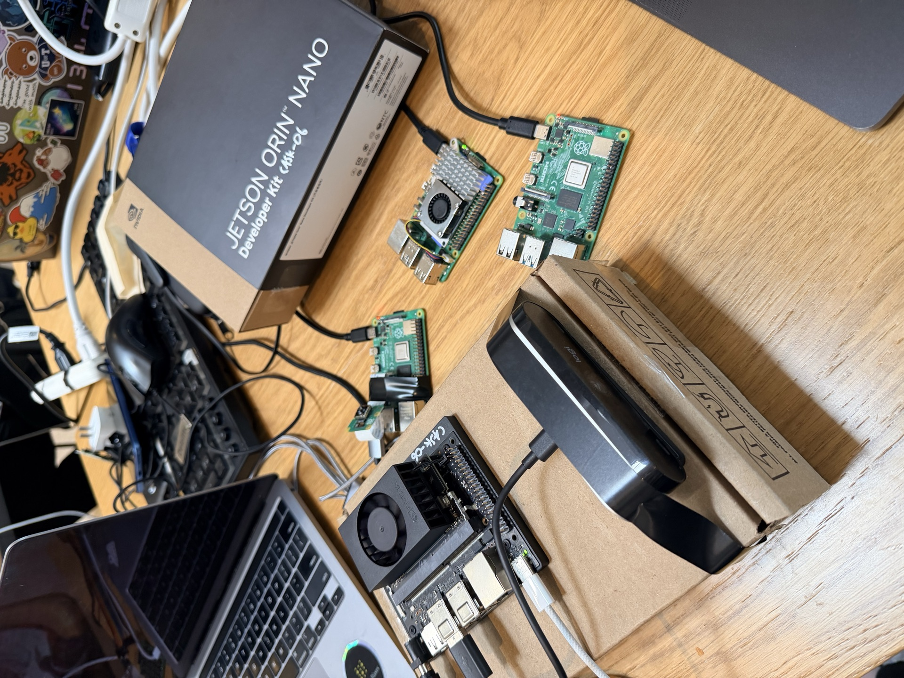
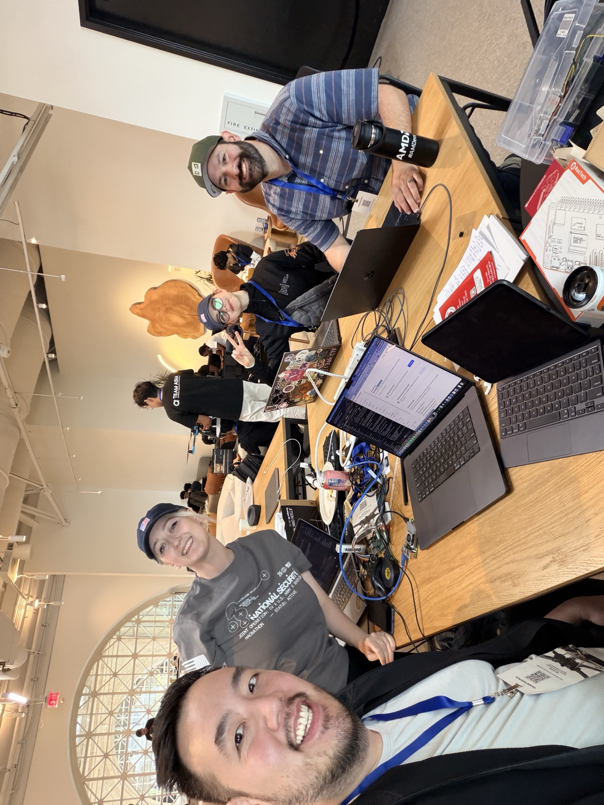

Mission
-Friendly Node
Degraded Node
Mesh Link
Camera FOV
RF Bearing
Fused Detection
Objective Area
Track Trail
Cue chain
Your next action
-Evidence summary
-Live at the bench
The mesh isn't a slide. A four-node fleet — Jetson Orin Nano altiair-orin, Raspberry Pi 5 altiair-hub, and two Raspberry Pi 4B sensor peers altiair-node-a / altiair-node-b — sits at the team bench, joined to the local Altiair-LAN over Wi-Fi, running the same node API, Ollama-served Gemma 4 e2b inference, and CASK evidence-bundle pipeline. An iPad on a chest harness mirrors the operator console as a wearable EagleEye-style display. Foundry / CASK sync queues locally until any gateway gets an uplink. Pull power from any one node and the surviving peers keep the mission picture.

Team
Four engineers, twenty-four hours, one DDIL mission stack.

Source · github.com/digitalnomd/altiair · Site · github.com/benikigai/darkmesh